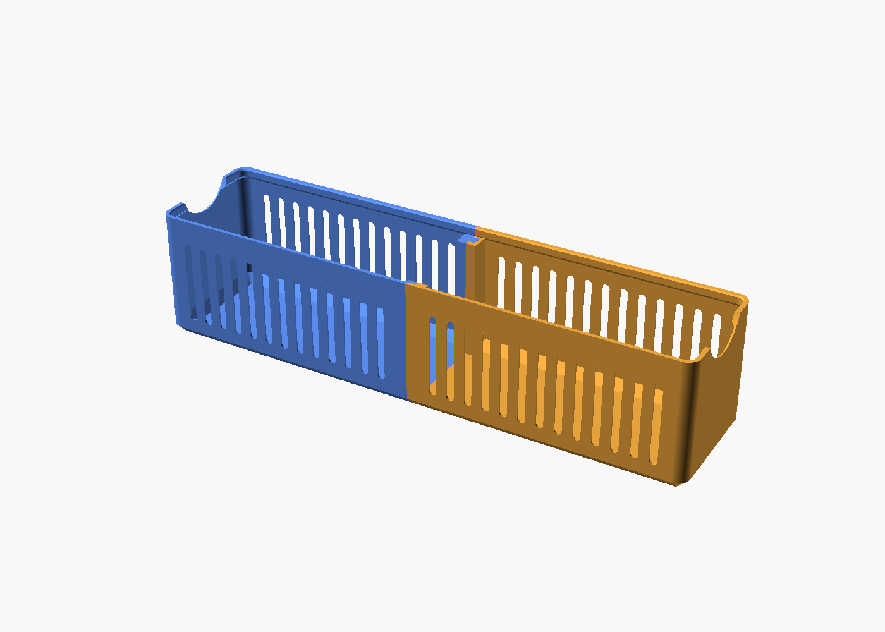
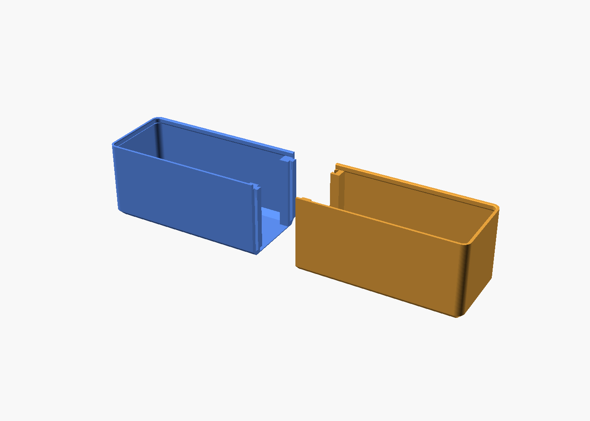
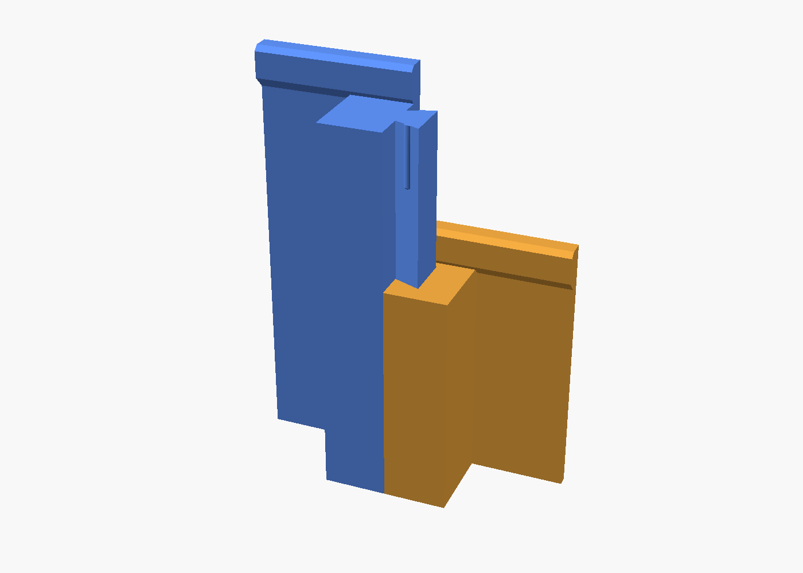
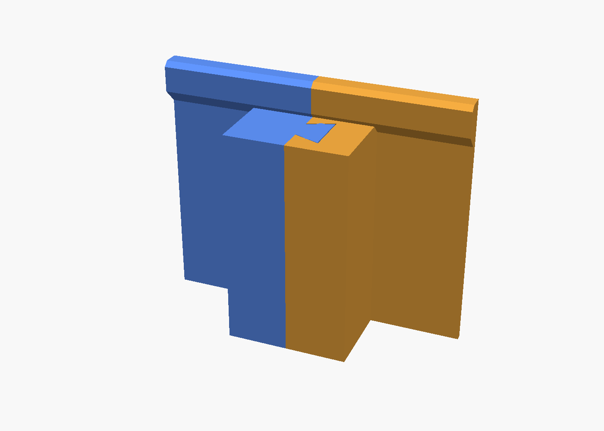
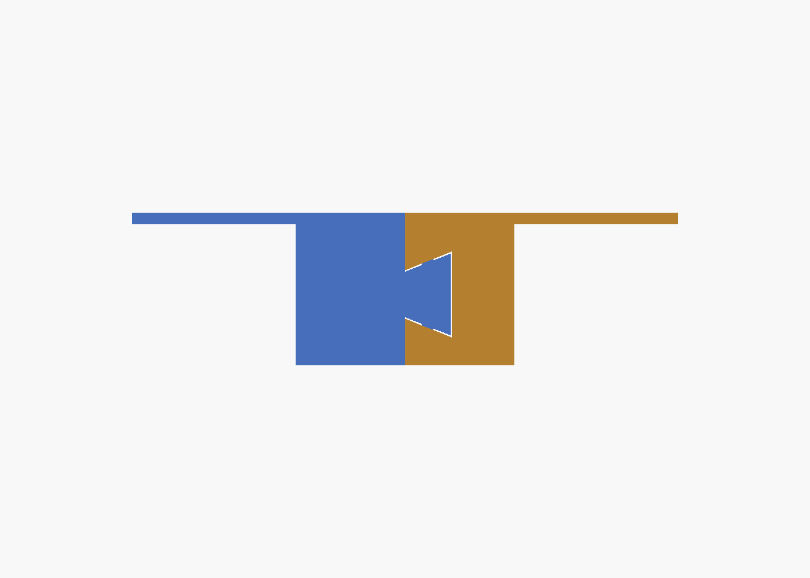
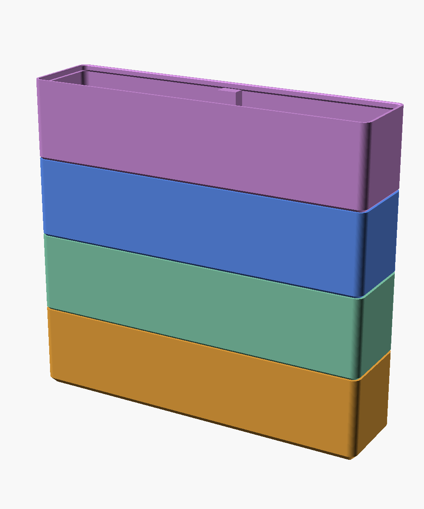
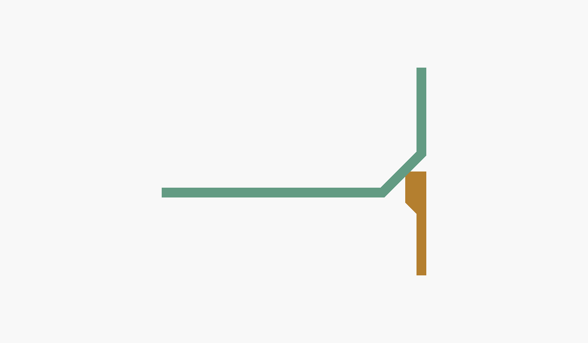
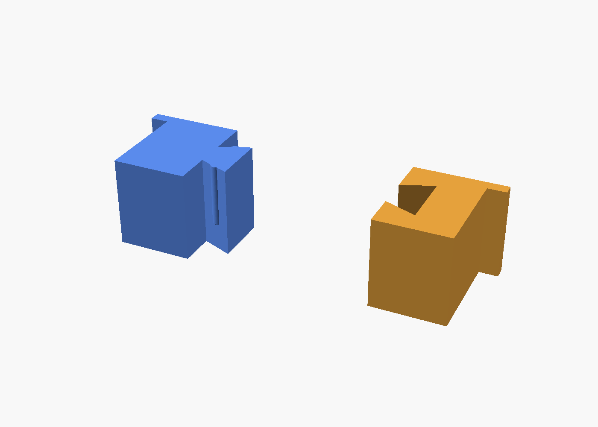
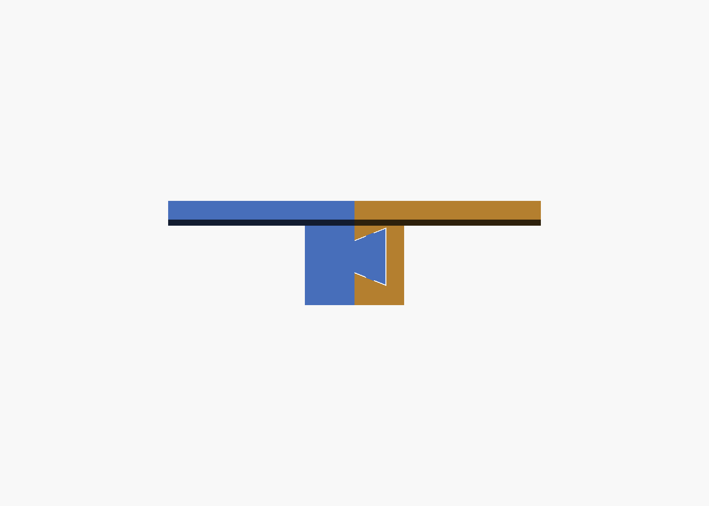
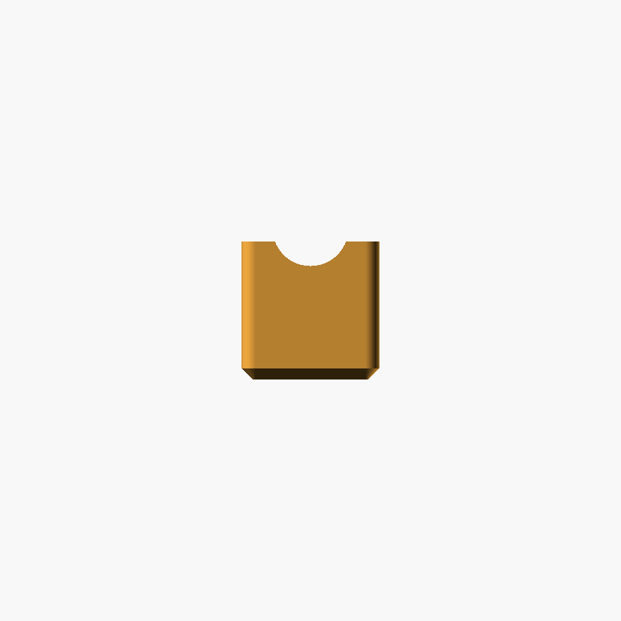

Outside
16¾ × 4 × 4
in, as asked
16¾ × 4 × 4 in, printed as two halves that lock together at mid-length, with slotted long walls and a finger scallop in each end. Four bins, one plate each. The joint fit comes from the ladder you printed: pair 4.

The bed is 256 mm square and the bin is 425 mm long, so no orientation fits a one-piece bin. Cutting it once at mid-length gives two 212.7 mm halves. Both halves of one bin share a plate, so one print is one bin and the four bins are four runs of the same plate.

Half A drops straight down onto half B. Two vertical dovetail tails on A slide into sockets on B, one on each long wall. Each socket has a sloped floor that matches the tail's sloped underside, so A sits down on a hard stop with the floors flush and the rims level. The slope is 50 degrees, which is what lets the tails print hanging off A's joint face without support. The dovetails take the pull-apart and sideways loads. The grip comes from two crush ribs on the top 6 mm of each tail: the tail body runs at a free 0.25 mm clearance and only the ribs touch, 0.10 mm deep. Those are the numbers of pair 4 on the fit ladder, the pair you picked on 2026-10-25.



The bottom 8 mm of every bin is a 45 degree flare. The top of every bin is a 4 mm thick lip with a matching 45 degree chamfer on its inner edge. Set one bin on another and the flare finds the chamfer and centres itself, dropping 5 mm in. Nothing overhangs past 45 degrees, so the whole bin prints without support, floor down.


| Plate | Objects | Time | PLA | Runs |
|---|---|---|---|---|
| 1 · Bin | Half A (tails), Half B (sockets) | 4 h 50 min | 240 g | 4 |
| 2 · Fit ladder | Four joint coupon pairs, marked 1 to 4 notches | 28 min | 17 g | printed |
| Four bins | 19 h 18 min | 960 g | 4 plates | |

| Pair | Body clearance | Rib crush | Rib length | Result |
|---|---|---|---|---|
| 1 notch | 0.25 mm | 0.15 mm | 12 mm | not chosen |
| 2 notches | 0.25 mm | 0.10 mm | 12 mm | the working guess; not chosen |
| 3 notches | 0.25 mm | 0.05 mm | 12 mm | not chosen |
| 4 notches bin | 0.25 mm | 0.10 mm | 6 mm | fit best; the bin is built to it |
Decided 2026-10-25: friction hold, scallop ends, 3.80 in pitch, both weight cuts, and the joint fit from the printed ladder. Kept here for the record with the alternative each one beat. Nothing is open: the colour is yours to pick in Bambu Studio.

No glue, no hardware, comes apart with a straight pull. Lifting a loaded bin by A's end relies on the ribs.
Identical print. One drop in each socket before the push. Permanent, holds either end.
Body 0.25 mm, rib crush 0.10 mm, ribs 6 mm. Your pick from the printed ladder: firm thumb pressure over the last stretch, holds when lifted.
12 mm ribs at 0.15, 0.10 and 0.05 mm crush. The first coupon, 0.15 mm body and 0.20 mm crush from the trial-box lid recipe, was too tight. Not chosen.

A 2 in wide, ¾ in deep scoop in each end wall (a 28 mm radius centred 10 mm above the rim). Easier to pull from a tight drawer; the stack still seats on the long sides and the end corners.
Full-height end walls, the lip as the grip. Not chosen.
Each bin is 4 in tall and drops 5 mm into the one below. Four bins stand 15.4 in.
If the stack has to come out at 16 in for four, each bin grows to 4.2 in tall. Say so and I rebuild.
Three steps down. The first version had 3-line walls in PETG: 368 g and 7 h 02 min per bin. For a drawer bin with no real load the walls went to 2 lines (1.24 mm) in PLA: 285 g and 4 h 58 min. Then you took both cuts: slotted long walls and 8 mm joint posts, with the scallops taking a little more. Built now: 240 g and 4 h 50 min per bin, 960 g for four.
Slot cut proven in the model: the removed volume equals the slot area times the wall to within 1 %, and no slot touches a post.
285 g and 4 h 58 min in PLA. Not chosen.